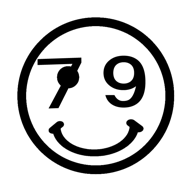

※ 自動=iPhoneは「1画面（映像）＋音声だけ別ソース」、PC/iPadは2分割。
※ iPhoneモード：「画面に出す」のレース映像を全画面表示、「音を出す」の解説を裏で再生。下の 🔊音声切替 で解説↔ライブ音を即切替。
※ ラグ合わせ：解説が音声のとき、ツールバーの −／＋ で解説をライブ位置から遅らせて同期。逆に解説が先行する場合はレース映像のシークバーを左ドラッグ（最大約4.7時間）。
「共有リンク」を別の人に渡すと、同じ設定（相手のYouTube＋好きな場など）でそのまま開けます。

レース映像（BOATCAST公式）と YouTube を、上下（横持ちは左右）2分割で同時再生します。
設定を確認して「再生」を押してください。